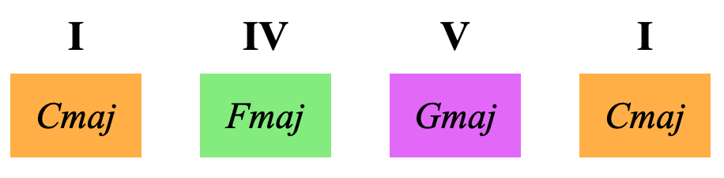
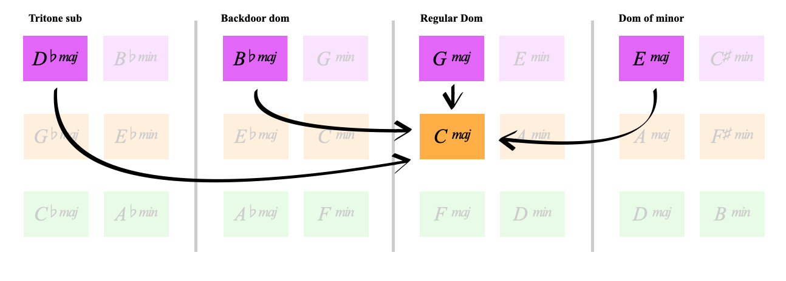
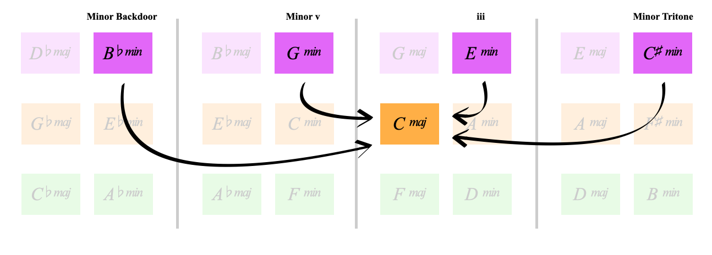
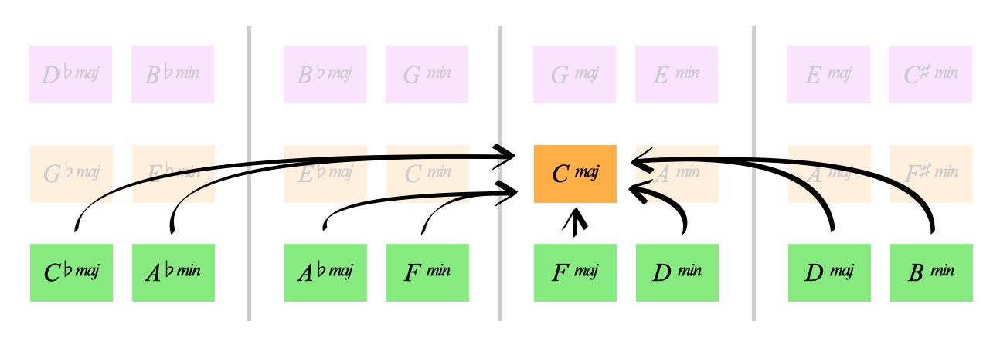

COLOURS:
Why do we have

What do these 3 colours do for us?
I learned this from Erno Lendvai in his book 'Symmetries of Music' (He calls it axis theory)
It's the power to understand and use any possible chord
Learning outcome: all purples are dominant to C, all greens are subdominant to C
Let's explain...
We're in the key of C major
We have chords I, IV and V built on the 1st, 4th and 5th degree of the C major scale:
C is called the Tonic because it feels like home
G is called the Dominant, it has tension which pulls back to the tonic
F is called the Subdominant, it can either set up the dominant or resolve to C
Hear how the dominant pulls back to the tonic
Can you hear how C is resolved and G feels unnresolved, pulling us back to C?
What about the subdominant?
It can either set up the dominant as in the first audio example of this page
or it can resolve to the tonic in its own way like this
this movement of IV to I is often called a plagal cadence
So these are the 3 functions: Tonic, Subdominant and Dominant
Our 3 harmonic functions map to the 3 secondary colours:

And heres the punchline of this entire page:
This applies to all possible chords
Of course there's much detail and nuance within this
But essentially we can say:
So here are all the purple major chords resolving to C:
Not only can we see our regular dominant Gmaj above Cmaj
But we also find traditional dominant substitutions here
You'll notice the tritone sub (Db), which could sound like this:
We did a 251 into C (Dm G C) but substituted the 5 for the purple Dbmaj
The progressions been jazzed up with extra notes but the underlying chord movement and functions remain
Which could sound like this:
Once again we're playing in a jazz context, but the movement of Bb to C as a dominant cadence is strong
In the cook book section of the website we'll explore many applications of metaharmony and go outside of the traditional jazz sound
It's the last of the purple major chords
Traditionaly E major resolves to the relative minor of C: A minor
That sounds like this:
We can use the colours to make chord movements that aren't traditional
We can resolve Emaj to Cmaj, simply because its purple to orange
This isn't a traditional thing, but it sounds beautiful:
Ok, so we've resolved all 4 purple majors into the key of C
We can use the purple minor chords as dominant to Cmaj
Let's hear one:
We'll do more practical explorations of meta harmony in the cook book part of the website
Achieving different flavours/vibes out of these different colour choices
But to conclude what we've just covered:
Great,
One last thought for this page
In the same way all purples work as dominant in the key of C,
All greens work as subdominants in the key of C
All greens can either set up any dominant cadence
or resolve to C as their own cadence:
They can move in other ways too
Here's an example from the cook book page "Exploring the subdominants part 1"
The progression goes:
C^7, F^7, C^7, F^7,
Dadd9, F^7, Dadd9, F^7,
C^7, F^7, Cmaj...
Well done for working through
We've learned that all purple chords are dominant to C major
and all green chords are subdominant to C major
We can use any purple or green chord in the key of C in many ways
Here's all the purples and greens to C:

When you're ready, continue to the next page
Back to Secondries | Harmonic Functions Part 2